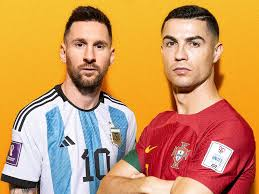

Modern soccer traces its origins back to England in the 19th century, when standardized rules were first established. Over time, the sport spread globally and became a cultural staple in countries across Europe, South America, Africa, and beyond. Today, international competitions such as the FIFA World Cup bring together nations from around the world and showcase the unifying power of the game.
You can reference this following website for more information:
The FIFA World Cup is the most prestigious international soccer tournament in the world, bringing together national teams from across the globe to compete at the highest level of the sport. Held every four years, the tournament showcases the skill, strategy, and teamwork of the best players representing their countries. Over the history of the World Cup, only a small number of nations have managed to win the title, highlighting how difficult and competitive the tournament truly is. The visualization below displays the teams that have won the FIFA World Cup, offering insight into which countries have historically dominated the competition and how success has been distributed over time.
Here are some reasons for Soccer's popularity:
Soccer helps players and officials develop valuable life skills beyond physical fitness. Participants learn leadership, communication, discipline, and how to make fast decisions under pressure. Whether playing or officiating, individuals must stay focused, adapt to changing situations, and work with others toward a common goal.
The debate over the greatest soccer player of all time, often called the GOAT debate, is most commonly centered around Lionel Messi and Cristiano Ronaldo. Both players have dominated the sport for more than a decade, breaking records and redefining what is possible at the highest level of competition. Messi is often praised for his creativity, vision, and natural playmaking ability, while Ronaldo is known for his athleticism, goal-scoring consistency, and relentless work ethic. Their contrasting styles, individual achievements, and team successes have fueled endless discussion among fans, analysts, and players around the world. Ultimately, the debate highlights not only their individual greatness but also how differently excellence can be expressed within the same sport.
I began playing soccer in sixth grade. At first, I didn’t want to play, but as I continued to learn and grow, I found a passion for the game. I made friends, got to know amazing coaches, and all the while I strengthened my skills as a soccer player. The summer after eighth grade, I spent almost every day practicing to try out for my high school soccer team. I learned dedication, communication, sportsmanship, and many other values that I hold dear to me. I tried out the following spring and put my all into it. Eventually, I got word that I made the JV team. That season and the following one helped me grow into the soccer player I am today. My junior year, I was elected captain of the soccer team! My hard work had finally come to fruition. The season I played was amazing, and the people I played with were amazing as well. I believe this was the year my communication skills flourished. Sadly, I was not able to try out my senior year, as practices had moved to the morning, which was when my seminary took place. A hard decision was in store for me, and I didn’t want to think about it. After long conversations and debate with my parents and coaches, I decided to attend seminary and not play my last year. The last thing my high school soccer career taught me was to put Jesus Christ above all else. I fully believe that soccer has helped me grow spiritually as much as physically and mentally. Now, as I continue on, I hope to continue to play soccer with friends and to grow my passion for the game evermore.
One of the most challenging aspects of soccer is decision-making in real time. This goes for players AND Referees. Referees must interpret the rules fairly and consistently, often under pressure from players, coaches, and spectators. This environment teaches confidence, accountability, and the importance of clear communication. I am always glad to see the future generation of Soccer players give it their all on the field. I've learned that patience is the greatest attribute for a referee in order to keep the game fair and fun.
Watching professional soccer highlights shows the speed, skill, and strategy required at the highest level. These moments demonstrate why the sport is so engaging for fans around the world.
Introduction
Soccer is one of the most popular sports in the world, played and watched by millions across every continent. What makes soccer unique is its simplicity: all you need is a ball, space to play, and people willing to compete. Despite this simplicity, the sport requires strategy, teamwork, communication, and quick decision-making.